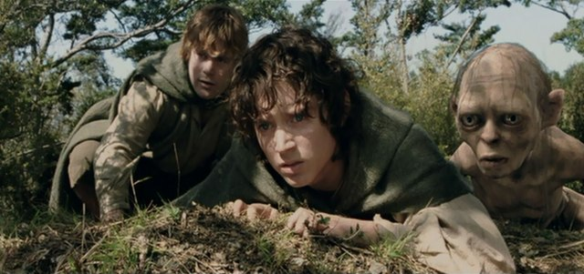
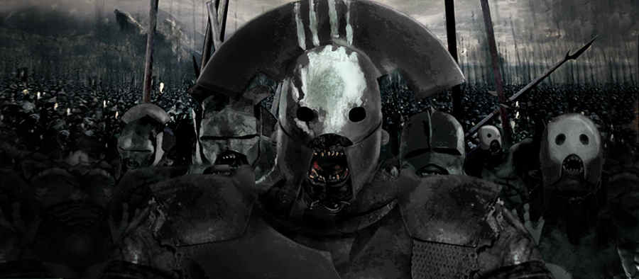
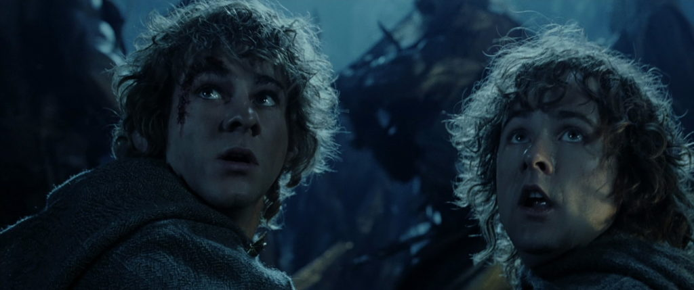

Lord of The Rings: The Two Towers
Release Date: 20 December 2002 (Turkey)
Genre: Adventure | Drama | Fantasy
OSCAR WINNER:
Best Sound Editing
Best Visual Effects
Budget:$94,000,000 (estimated)
Cumulative Worldwide Gross: $926,047,111, 25 November 2011
Runtime: 179 min
IMDb: 8,7/10
source
The Two Towers is a 2002 fantasy adventure film directed by Peter Jackson and based on the second volume of J. R. R. Tolkien's novel The Lord of the Rings.
While Frodo and Sam edge closer to Mordor with the help of the shifty Gollum,
the divided fellowship makes a stand against Sauron's new ally, Saruman, and his hordes of Isengard.

Sam and Frodo and Gollum
source
The Fellowship has been broken. Boromir is dead, Frodo Baggins and Samwise Gamgee
have gone to Mordor alone to destroy the One Ring, Merry and Pippin have been captured by the Uruk-hai,
and Aragorn, Legolas, and Gimli have made friends of the Rohan, a race of humans that are in the path of
the upcoming war, led by its aging king, Théoden.


Uruk-hai and Merry and Pippin
The two towers between Mordor and Isengard, Barad-dûr and Orthanc, have united in their lust for destruction. The corrupt wizard Saruman, under the power of the Dark Lord Sauron, and his slimy assistant, Gríma Wormtongue, have created a grand Uruk-hai army bent on the destruction of Man and Middle-earth. The rebellion against Sauron is building up and will be led by Gandalf the White, who was thought to be dead after the Balrog captured him. One of the Ring's original bearers, the creature Gollum,
has tracked Frodo and Sam down in search of his 'precious', but is captured by the Hobbits and
used as a way to lead them to Mt. Doom. The War of the Ring has now begun...
source
Made by Elif Köseler